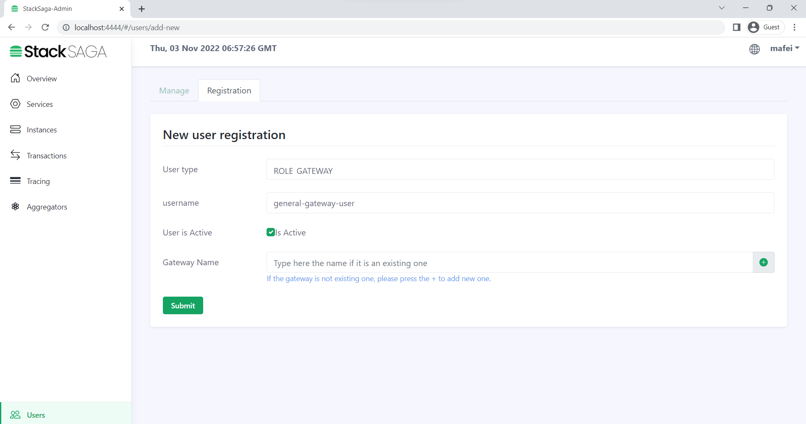
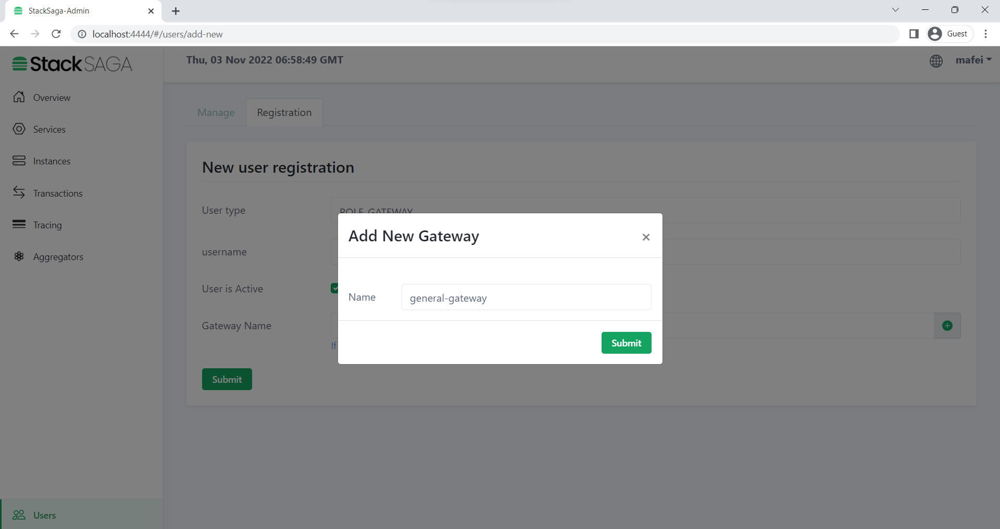
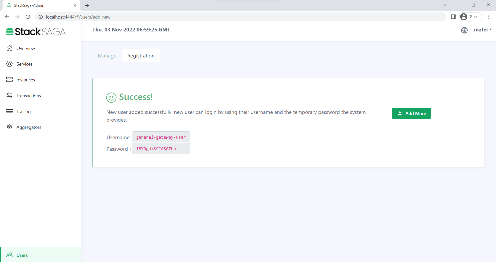
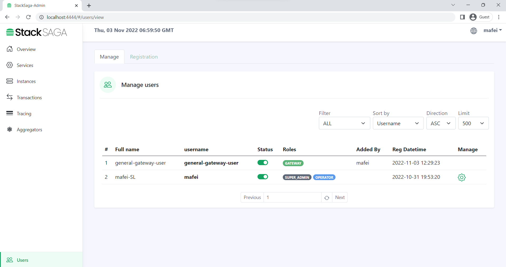
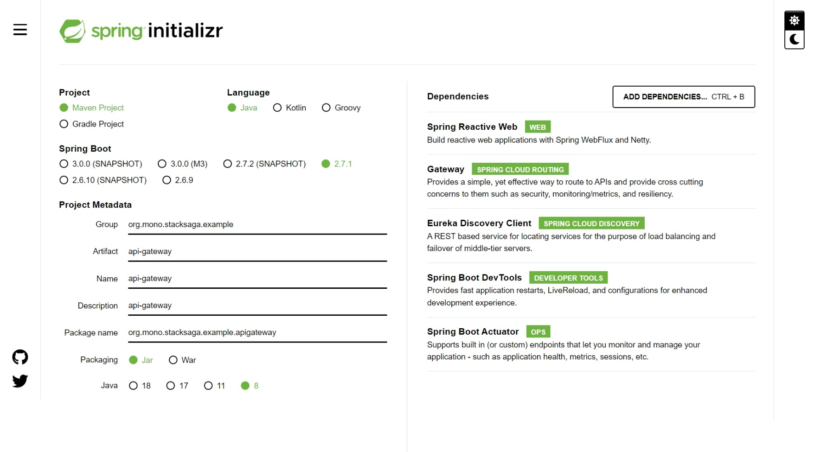

Introduction
In the previous articles, we have successfully created the eureka-server, As the next step we are going to implement the spring api cloud gateway. An API gateway is programming that sits in front of an API ( Application Programming Interface) and is the single-entry point for defined back-end APIs and microservices (which can be both internal and external). Sitting in front of APIs, the gateway acts as protection, administering security and scalability, and high availability. To put it simply, API Gateway takes all API requests from a customer, determines which services are demanded, and combines them into a unified, flawless experience for users.
Advantages of API Gateway
- It improves the security of the microservices as we limit the access of external calls to all our services.
- The cross-cutting concerns like authentication, monitoring/metrics, and resiliency will be needed to be implemented only in the API Gateway as all our calls will be routed through it.
- The client does not know about the internal architecture of our microservices system. The client will not be able to determine the location of the microservice instances.
- Simplifies client interaction as he will need to access only a single service for all the requirements.

Usage Of Api-Gateway With StackSaga
To communicate individual services with the admin, StackSaga Connect should be used and
therefore, to protect the /stacksaga endpoints, StackSaga shield also should be
used.
to use the StackSaga shield with the api gateway, we have to create a
ROLE_GATEWAY user and get the credentials. let's go to the StackSaga Admin
dashboard and create a new user for a new api-gateway step by step.
Read StackSaga
architecture in high level
page to get the idea how behave the ecosystem.
1. Go to the users page and select the Registration tab to register the new api gateway user.
2. Before adding the gateway user, we have to create a new api-gateway (because in the StackSaga system, one api-gateway-can have multiple gateway-users.)
3. After entering the user data, you will have a generated password by the StackSaga admin. Save the username and the password in a secret file. it is the credential that we want use for the shield congregation properties.
4. you can see the new user in the list.
Creating api-gateway-service.
Visit to the spring initializer and create the project by adding the following dependencies.
Implementation of api-gateway-service
the next step is adding the StackSaga
Shield in to the api-gateway service. to add the maven plugin in to the project, copy
this code and enter it into the pom.xml's dependencies section.
Configuration properties
To connect with eureka server and other utility microservices, We have to put some
properties and configurations by default in the spring framework.
in addition to that, StackSaga Shield also has more configurations to be added.
in the application.yml
file.
application.yml
api-gateway > src/main/resources/application.ymlAnnotate the main class
in the api-gateway project, we have to use two annotations for enabling the eureka client
capabilities @EnableEurekaClient and enabling the webflux capabilities @EnableWebFlux.
(Api-gateway uses internally reactive way with webflux to increase the performance and to
the
resilience of the application due to all the requests are going through the Api-gateway for
each service )
Now the api-gateway is ready to use.
Check the health by using the Curl.
curl --location --request GET 'http://localhost:8080/actuator/health'
After all, The api-gateway project folder and file structure like below.
└───main
├───java
│ └───org
│ └───mono
│ └───stacksaga
│ └───example
│ └───apigateway
│ ApiGatewayApplication.java
│
└───resources
application.yml
Example series
-
Microservice example without using StackSAGA (Imperative way)
-
Microservice example by using StackSAGA (Imperative way).